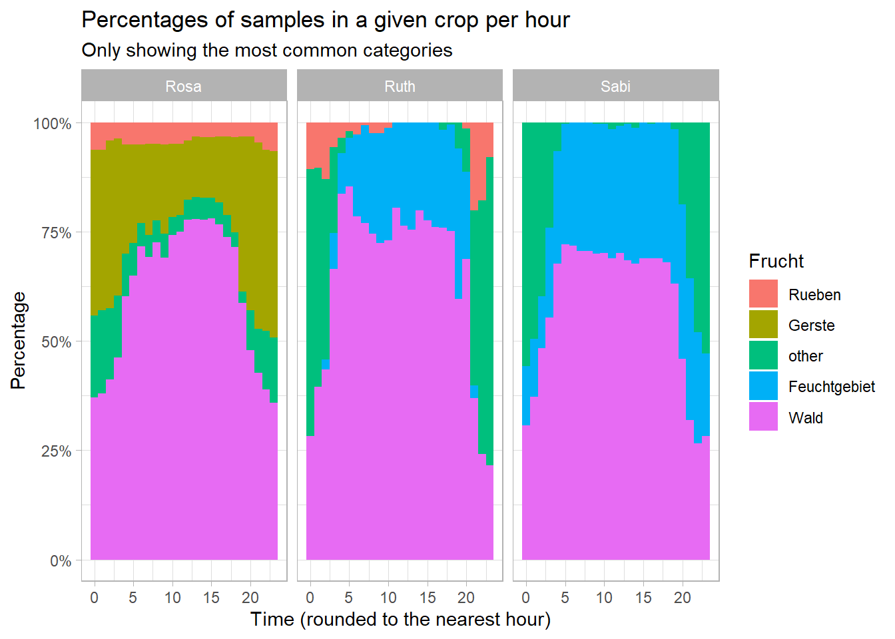
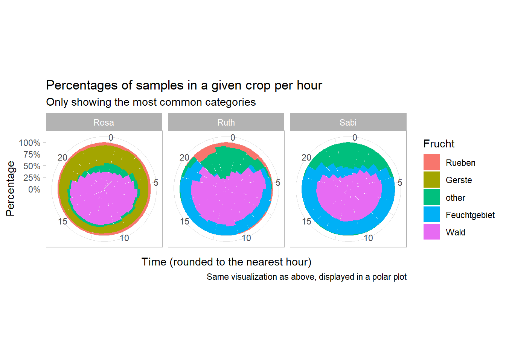
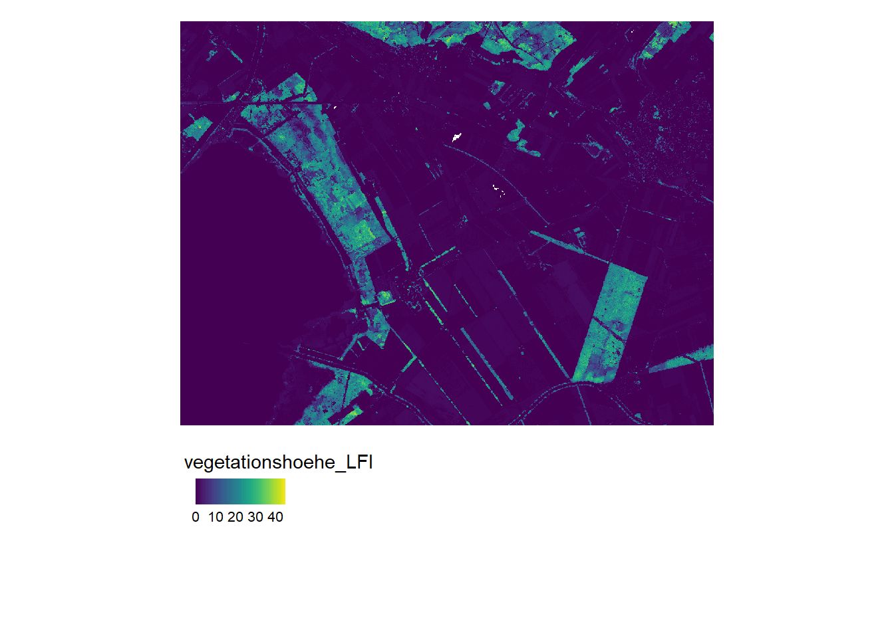

Tasks and Inputs
Open your RStudio Project which you prepared from this week. Create a new RScript and import the libraries we need for this week. Import your wildboar dataset as an sf object
library(readr)
library(sf)
library(terra)
library(dplyr)
library(lubridate)
library(ggplot2)
library(tmap)
wildschwein_BE <- read_delim("00_Rawdata/wildschwein_BE_2056.csv",",") %>%
st_as_sf(coords = c("E", "N"), crs = 2056, remove = FALSE)Download the dataset Feldaufnahmen_Fanel.gpkg and save it to your project folder. This is a vector dataset stored in the filetype Geopackage, which is similar to a Shapefile, with some advantages (see the website shapefile must die).
Also download the dataset vegetationshoehe_LFI.tif. This is a “raster” dataset stored in a Geotiff, similar to the map we imported in week 1. Also store this file in your project folder and commit these to your repo.
Tasks 1: Import and visualize spatial data
Since Feldaufnahmen_Fanel.gpkg is a vector dataset, you can import it using read_sf(). Explore this dataset in R to answer the following questions:
- What information does the dataset contain?
- What is the geometry type of the dataset (possible types are: Point, Lines and Polygons)?
- What are the data types of the other columns?
- What is the coordinate system of the dataset?
Task 2: Annotate Trajectories from vector data
We would like to know what crop was visited by which wild boar, and at what time. Since the crop data is most relevant in summer, filter your wildboar data to the months may to june first and save the output to a new variable. Overlay the filtered dataset with your fanel data to verify the spatial overlap.
To sematically annotate each wildboar location with crop information, you can use a spatial join with the function st_join(). Do this and explore your annotated dataset.
Task 3: Explore annotated trajectories
Think of ways you could visually explore the spatio-temporal patterns of wild boar in relation to the crops. In our example below we visualize the percentage of samples in a given crop per hour.

Task 4: Import and visualize vegetationindex (raster data)
You have already downloaded the dataset vegetationshoehe_LFI.tif. Import this dataset
In terms of raster data, we have prepared the Vegetation Height Model provided by the Swiss National Forest Inventory (NFI). This dataset contains high resolution information (1x1 Meter) on the vegetation height, which is determined from the difference between the digital surface models DSM and the digital terrain model by swisstopo (swissAlti3D). Buildings are eliminated using a combination of the ground areas of the swisstopo topographic landscape model (TLM) and spectral information from the stereo aerial photos.
Import the dataset just like you imported the raster map in week 1 (using terra::rast()). Visualize the raster data using tmap (ggplot is very slow with raster data).

Task 5: Annotate Trajectories from raster data
Semantically annotate your wildboar locations with the vegetation index (similar as you did with the crop data in Task 2). Since you are annotating a vector dataset with information from a raster dataset, you cannot use st_join but need the function extract from the terra package. Read the help on the extract function to see what the function expects. The output should look something like this:
## Simple feature collection with 51246 features and 7 fields
## geometry type: POINT
## dimension: XY
## bbox: xmin: 2568153 ymin: 1202306 xmax: 2575154 ymax: 1207609
## projected CRS: CH1903+ / LV95
## First 10 features:
## TierID TierName CollarID DatetimeUTC E N
## 1 002A Sabi 12275 2014-08-22 21:00:12 2570409 1204752
## 2 002A Sabi 12275 2014-08-22 21:15:16 2570402 1204863
## 3 002A Sabi 12275 2014-08-22 21:30:43 2570394 1204826
## 4 002A Sabi 12275 2014-08-22 21:46:07 2570379 1204817
## 5 002A Sabi 12275 2014-08-22 22:00:22 2570390 1204818
## 6 002A Sabi 12275 2014-08-22 22:15:10 2570390 1204825
## 7 002A Sabi 12275 2014-08-22 22:30:13 2570387 1204831
## 8 002A Sabi 12275 2014-08-22 22:45:11 2570381 1204840
## 9 002A Sabi 12275 2014-08-22 23:00:27 2570316 1204935
## 10 002A Sabi 12275 2014-08-22 23:15:41 2570393 1204815
## vegetationshoehe_LFI geometry
## 1 20.09 POINT (2570409 1204752)
## 2 23.85 POINT (2570402 1204863)
## 3 24.96 POINT (2570394 1204826)
## 4 21.59 POINT (2570379 1204817)
## 5 15.68 POINT (2570390 1204818)
## 6 23.77 POINT (2570390 1204825)
## 7 25.09 POINT (2570387 1204831)
## 8 24.88 POINT (2570381 1204840)
## 9 29.91 POINT (2570316 1204935)
## 10 21.52 POINT (2570393 1204815)You can now explore the spatiotemporal patterns of this new data.